Code
library(tidyverse)
library(tidycensus)
library(sf)
library(caret)
library(spdep)
library(nngeo)
options(scipen = 999)MUSA 5080 · Team assignment
In class we built a house price model for Philadelphia. Now your team does it for a city you haven’t modeled: Chicago.
The Cook County Assessor’s Office has to value every home in the county, including the vast majority that didn’t sell this year. Assessments drive property tax bills. When they’re wrong in a systematic way, some households pay more than their share. A 2017 Chicago Tribune investigation, “The Tax Divide,” found exactly that in Cook County: lower-value homes were assessed at higher shares of their worth than expensive ones.
Build a model that predicts single-family sale prices in Chicago, 2023–2025, using only the tools from this course. The file contains only features of the house itself. Everything about location is yours to build.
| File | What’s in it |
|---|---|
chicago_train.csv |
About 80% of the houses, with sale prices |
chicago_test.csv |
The other 20%, without sale prices. You predict them; we score you. |
The test houses were held out by house, not by sale, so a house that sold twice is entirely on one side. Your CV RMSE is your estimate. Your test RMSE is the truth. If they’re far apart, something leaked.
Due: Friday, October 30. All teammates renders the file on their portfolio and every member submits that link on Canvas. One teammate uploads team_XX_predictions.csv.
Individual accountability: Q7 on October 30 asks each of you about this model: which features you used and why, your CV and test RMSE, and where the model fails worst. Make sure everyone can explain all of it.
You must predict every test house, so fill NAs in a feature rather than filtering.
Open data from 2023–2025 only.
Nothing built from sale prices. Would the Assessor have this number for a house that didn’t sell?
Transform predictors, not sale_price.
No features built from other houses’ sale prices.
| Model log | Every model you tried, in order, with CV RMSE and Moran’s I. Each row has a note saying why you tried it. |
| Features | Incorporate the feature engineering tricks - including the spatial ones covered these past few weeks. |
| Diagnostics | Residual maps for your baseline and final model, and what changed. |
| Error analysis | Where your final model fails worst, and whose homes it over-values (Part 4). |
| Reasoning | Choices justified by evidence from your own analysis. |
These helpers are to help you get off the ground.
library(tidyverse)
library(tidycensus)
library(sf)
library(caret)
library(spdep)
library(nngeo)
options(scipen = 999)check_na <- function(formula, df) {
vars <- all.vars(formula)
bad <- vars[sapply(vars, function(v) any(is.na(df[[v]])))]
if (length(bad) > 0) {
stop("These variables have NAs: ", paste(bad, collapse = ", "),
". Fill them or choose another variable (Rule 1).")
}
}
# 10-fold CV RMSE, same folds every time
cv_rmse <- function(formula, data) {
df <- if (inherits(data, "sf")) st_drop_geometry(data) else data
check_na(formula, df)
set.seed(5080)
fit <- train(formula, data = df, method = "lm",
trControl = trainControl(method = "cv", number = 10))
fit$results$RMSE
}
# Each house's prediction from the fold where it was held out
cv_pred <- function(formula, data) {
df <- if (inherits(data, "sf")) st_drop_geometry(data) else data
check_na(formula, df)
set.seed(5080)
fit <- train(formula, data = df, method = "lm",
trControl = trainControl(method = "cv", number = 10,
savePredictions = "final"))
fit$pred %>% arrange(rowIndex) %>% pull(pred)
}
# Chicago Data Portal (Socrata) -> sf. `where` is a SoQL filter.
socrata_get <- function(dataset, where, select = NULL, limit = 200000) {
where <- str_squish(where)
q <- paste0("$where=", URLencode(where, reserved = TRUE), "&$limit=", limit)
if (!is.null(select)) q <- paste0(q, "&$select=", URLencode(str_squish(select), reserved = TRUE))
url <- paste0("https://data.cityofchicago.org/resource/", dataset, ".geojson?", q)
tmp <- tempfile(fileext = ".geojson")
resp <- tryCatch(download.file(url, tmp, quiet = TRUE), error = function(e) e)
if (inherits(resp, "error")) stop("Portal request failed. Open this URL in a browser to see why:\n", url)
st_read(tmp, quiet = TRUE)
}
# built helper based on week 7 notes
cv_moran <- function(formula, data){
resids <- data$sale_price - cv_pred(formula, data)
coords <- st_coordinates(data)
w_knn <- nb2listw(knn2nb(knearneigh(coords, k = 5)), style = "W")
set.seed(5080)
mc <- moran.mc(resids, w_knn, nsim = 499)
mc$statistic[[1]]
}Build every feature on all_sales, so training and test houses get identical features. Split off train again whenever you add something.
all_sales <- bind_rows(
read_csv("data/chicago_train.csv", show_col_types = FALSE) %>% mutate(split = "train"),
read_csv("data/chicago_test.csv", show_col_types = FALSE) %>% mutate(split = "test")
) %>%
st_as_sf(coords = c("lon", "lat"), crs = 4326) %>%
st_transform(3435) # Illinois East State Plane, feet
all_sales %>% st_drop_geometry() %>% count(split)# A tibble: 2 × 2
split n
<chr> <int>
1 test 5789
2 train 23200Useful sources: the Chicago Data Portal (find a dataset’s ID under its API button), the Census via tidycensus, and Cook County’s open data.
Decide which training sales are market sales. Record each rule, why, and how many it removed. Then explore: at least four plots, including a map of price.
In building our model, we only included homes price/sqft below the 0.1st percentile ($11.70/sqft). Extreme values below this cutoff point appeared to be off-market sales; a lot of larger homes sold for less than expected under ~ $15/sqft, which suggested they weren’t representative/good training observations. We removed 24 training observations due to this reason. On the other end of the spectrum, we removed homes where Price/sqft was above the 99.9th percentile ($1300/sqft). Extreme values above this cutoff point were mostly multi-parcel sales which seemed to reflect the price of the full sale vs. the individual home (e.g., $21.8 million on a 2000 square foot house). This removed 24 training observations.
Lastly, one sale had no census tract match because it was located outside of ACS tract boundaries and had no associated ACS values. Because of this, we removed 1 training observation.
In total, we removed 49 observations. We used price/sqft to try to normalize the metric across home sizes/types. A lot of very expensive (high price/sqft) homes at the high end seemed to be actual sales, possibly more historic homes in more expensive parts of the city.
# -----------------------------------------------------------------------
# Check NAs
# pull training set out, drop geom
train <- all_sales %>%
filter(split == "train") %>%
st_drop_geometry()
# pull test set out, drop geom
test <- all_sales %>%
filter(split == "test") %>%
st_drop_geometry()
sales <- rbind(train, test) # full df, no geom
all_geom <- all_sales %>% select(id, geometry) # save geometries to merge back
# -----------------------------------------------------------------------
# check for NAs across full df
na_cols <- c()
for (column in names(sales)) {
if (any(is.na(sales[,column]))) {
na_cols <- c(na_cols, column)
}
}
na_cols # can see all have actual 0s so not same as NA[1] "sale_price" "lotsize_acre" "num_half_baths" "num_fireplaces"
[5] "garage_size" "full_basement" "warmairfurnace"# dropping price from consideration here since NAs are from test
na_cols <- na_cols[na_cols != "sale_price"]
# check counts of missingness in both dfs
for (column in na_cols) {
n_train <- sum(is.na(train[,column]))
n_test <- sum(is.na(test[,column]))
cat(column, ": ", n_train, " train, ", n_test, " test\n", sep = "")
}lotsize_acre: 1 train, 0 test
num_half_baths: 38 train, 7 test
num_fireplaces: 349 train, 63 test
garage_size: 11 train, 5 test
full_basement: 2 train, 0 test
warmairfurnace: 7 train, 2 test# -----------------------------------------------------------------------
# compare missing to non-missing homes
# looking at how medians of other covariates differ
na_exam <- data.frame()
for (column in na_cols) {
is_missing <- is.na(train[[column]])
row <- data.frame( # build rows of median values
column = column,
n_missing = sum(is_missing),
age_missing = median(train$building_age[is_missing]),
age_present = median(train$building_age[!is_missing]),
sqft_missing = median(train$building_000sf[is_missing]),
sqft_present = median(train$building_000sf[!is_missing]),
price_missing = median(train$sale_price[is_missing]),
price_present = median(train$sale_price[!is_missing])
)
na_exam <- bind_rows(na_exam, row)
}
na_exam column n_missing age_missing age_present sqft_missing sqft_present
1 lotsize_acre 1 1.0 80 1.7100 1.237
2 num_half_baths 38 5.0 80 1.5315 1.237
3 num_fireplaces 349 1.0 81 2.3320 1.228
4 garage_size 11 122.0 80 1.4750 1.237
5 full_basement 2 82.5 80 1.6460 1.237
6 warmairfurnace 7 3.0 80 2.0680 1.237
price_missing price_present
1 230000 303000
2 396000 302500
3 780000 300000
4 245000 303000
5 1015800 302850
6 799900 302500For 4 of the 6 variables with missingness in the training set median age appears to be significantly lower than the median age of homes where the values are present. Might be the case that newer homes haven’t had the data properly collected/listed yet. num_fireplaces and num_half_baths have the highest n missing and both have this issue - so will fill with median values. Will do the same for garage_size and full_basement even tho relationship is less explainable. but only 13 NAs in training set across both. Apply to train and test
# -----------------------------------------------------------------------
# fill NAs, using the training data to calc median value
for (column in na_cols) {
is_missing <- is.na(sales[[column]]) # index rows w/ NAs
fill_med <- median(train[[column]], na.rm = TRUE) # get median for var
sales[[column]][is_missing] <- fill_med # fill NAs w/ med
}# -----------------------------------------------------------------------
# now look into outcome outliers
#re-write test and train w/ adjusted sales df
test <- sales %>% filter(split == "test")
train <- sales %>% filter(split == "train")
# sale price dist
quantile(train$sale_price, probs = c(0, 0.001, 0.01, 0.05, 0.5, 0.95, 0.99, 0.999, 1)) 0% 0.1% 1% 5% 50% 95%
10373.00 15000.00 31997.55 65000.00 302950.00 1370000.00
99% 99.9% 100%
2630150.00 5140050.00 21800000.00 ggplot(train, aes(x = sale_price)) +
geom_histogram(bins = 100) +
labs(title = "Sale prices (raw)", x = "Sale price", y = "Count") +
theme_minimal()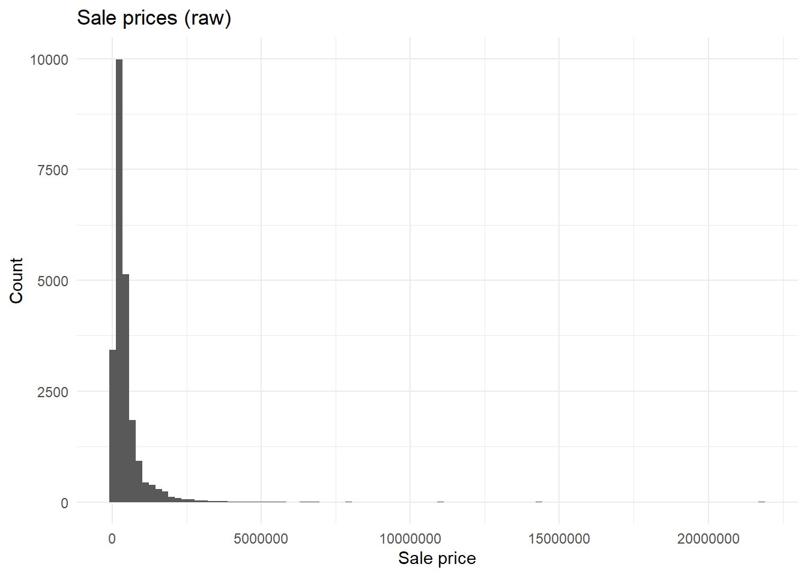
ggplot(train, aes(x = log(sale_price))) +
geom_histogram(bins = 100) +
labs(title = "Sale prices (log)", x = "Sale price", y = "Count") +
theme_minimal()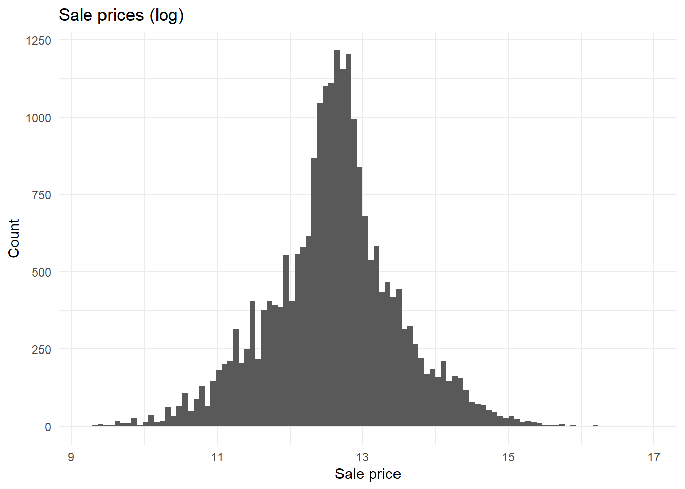
Would be nice if we could log this
# -----------------------------------------------------------------------
# build price per square foot to check for outliers
train$price_sqft <- train$sale_price / (train$building_000sf * 1000)
cutoffs <- round(quantile(train$price_sqft, probs = c(0.001, 0.01, 0.05, 0.5, 0.95, 0.99, 0.999)), 2)
# visual check on extreme high price/swqft
train %>%
arrange(desc(price_sqft)) %>%
select(sale_price, price_sqft, building_000sf, building_age, is_multisale) %>%
head(15)# A tibble: 15 × 5
sale_price price_sqft building_000sf building_age is_multisale
<dbl> <dbl> <dbl> <dbl> <dbl>
1 21800000 10750. 2.03 30 1
2 11000000 4891. 2.25 125 1
3 4750000 4431. 1.07 135 0
4 11000000 4400 2.5 136 1
5 1930000 3217. 0.6 133 0
6 2900000 3021. 0.96 80 1
7 700000 2846. 0.246 11 0
8 1650000 1925. 0.857 127 0
9 2500000 1894. 1.32 142 0
10 1625000 1798. 0.904 136 0
11 2050000 1627. 1.26 135 0
12 1200000 1579. 0.76 133 1
13 1350000 1557. 0.867 142 0
14 1349000 1533. 0.88 116 0
15 1635000 1474. 1.11 142 0# bottom end
train %>%
arrange(price_sqft) %>%
select(sale_price, price_sqft, building_000sf, building_age, is_multisale) %>%
head(15)# A tibble: 15 × 5
sale_price price_sqft building_000sf building_age is_multisale
<dbl> <dbl> <dbl> <dbl> <dbl>
1 30000 5.60 5.36 141 0
2 30000 5.60 5.36 141 0
3 15000 6.23 2.41 130 0
4 11000 6.79 1.62 105 0
5 13500 6.89 1.96 130 0
6 11500 7.29 1.58 19 0
7 15000 7.49 2.00 111 0
8 42000 7.84 5.36 143 0
9 42000 7.84 5.36 143 1
10 18000 8.31 2.17 109 0
11 15000 8.74 1.72 122 0
12 12545 8.76 1.43 43 0
13 12000 8.77 1.37 109 0
14 12000 9.92 1.21 130 0
15 15000 10.4 1.44 77 0# ------------------
# drop outliers using price_sqft
# choosing to drop obs outside of 0.1 and 99.9 pctiles of price/square ft
sales$price_sqft <- sales$sale_price / (sales$building_000sf * 1000)
# merge geom back in for plot
train <- train %>% left_join(., all_geom, by = "id") %>%
st_as_sf()
ggplot(train) +
geom_sf(aes(color = sale_price), size = 0.3) +
scale_color_viridis_c(trans = "log10", labels = scales::dollar) +
labs(title = "Sale price, training homes", color = "Sale price") +
theme_void()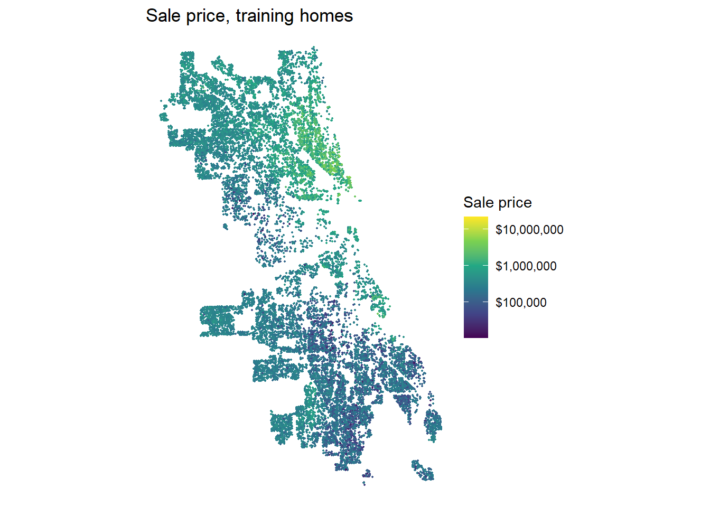
sales <- sales %>%
filter(split == "test" | # don't drop any test
price_sqft > cutoffs["0.1%"] &
price_sqft < cutoffs["99.9%"]) %>%
select(-price_sqft)
nrow(sales) - nrow(all_sales)[1] -48# Dropped 48 homes from train set for unrealistic price per sqft
# -----------------------------------------------------------------------
# Year + quarter factor var
sales$year_qtr <- factor(paste0(sales$year, "Q", sales$sale_qrt))
table(sales$year_qtr)
2023Q1 2023Q2 2023Q3 2023Q4 2024Q1 2024Q2 2024Q3 2024Q4 2025Q1 2025Q2 2025Q3
2305 3275 3042 2472 2285 3065 2880 1983 1435 2591 2688
2025Q4
920 # Square footage relative to lot size - big yard or giant/tall building
# Googled for acre -> sqft conversion
sales$sqft_lot_ratio <- (sales$building_000sf*1000) / (sales$lotsize_acre*43560)
# Age of house flag
sales$new <- as.integer(sales$building_age <= 10)
sales$old <- as.integer(sales$building_age >= 100)
train <- sales %>% filter(split == "train") #resave
test <- sales %>% filter(split == "test")# -----------------------------------------------------------------------
train_df <- st_drop_geometry(train)
#summary(train_df)
cont_vars <- c("building_000sf", "building_age", "lotsize_acre")
for (var in cont_vars) {
p <- ggplot(train_df, aes(x = .data[[var]], y = sale_price)) +
geom_point(alpha = 0.1, size = 0.5) +
geom_smooth(se = FALSE, color = "red") +
coord_cartesian(ylim = c(0, 2000000)) + # googled
labs(title = paste("Sale price vs.", var), x = var, y = "Sale price") +
theme_minimal()
print(p)
}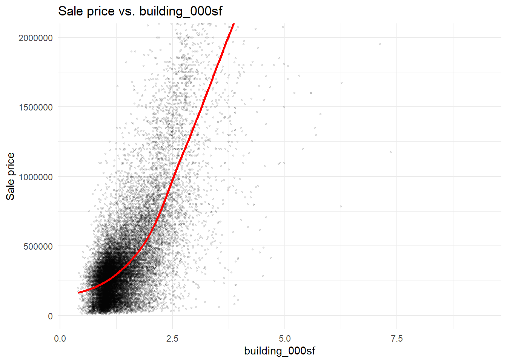
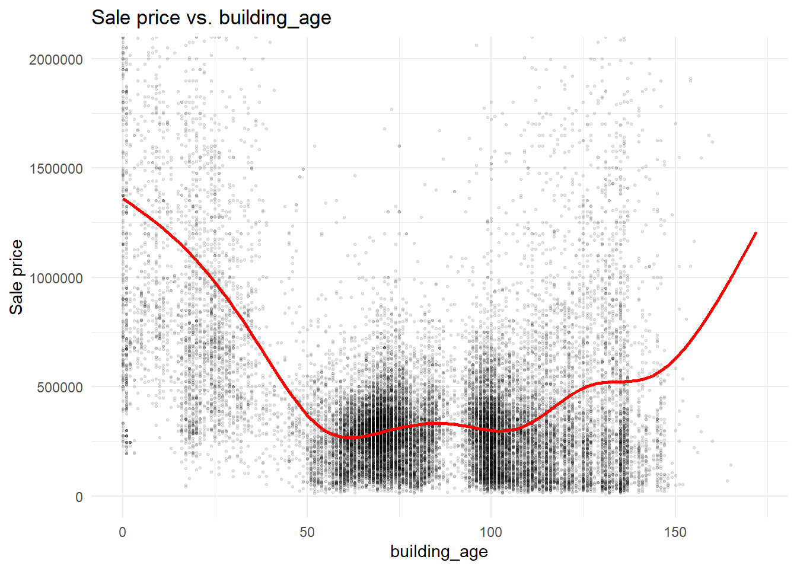
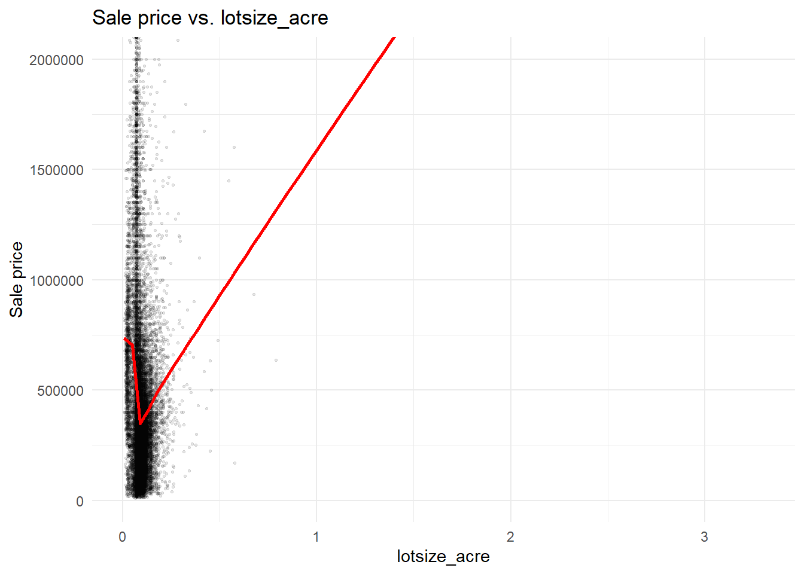
count_vars <- c("num_bedrooms", "num_full_baths",
"num_half_baths", "num_fireplaces",
"garage_size")# -----------------------------------------------------------------------
# pull
acs_vars <- c(
total_pop = "B01003_001",
med_income = "B19013_001", # med income
total_hh = "B25003_001", # owner-occupancy rate
owned_hh = "B25003_002",
pop_25up = "B15003_001", # education among adults
ba = "B15003_022",
ma = "B15003_023",
prof = "B15003_024",
phd = "B15003_025",
pov_pop = "B17001_001", # poverty
pov_num = "B17001_002",
total_units = "B25002_001", # vacancy
vacant_units = "B25002_003",
vehicle_hh = "B08201_001", # no vehicles
no_vehicle = "B08201_002")
tracts <- get_acs(
geography = "tract",
variables = acs_vars,
state = "IL",
county = "Cook",
year = 2024,
survey = "acs5",
geometry = TRUE,
output = "wide") %>%
st_transform(3435)
|
| | 0%
|
|= | 1%
|
|== | 2%
|
|== | 3%
|
|=== | 4%
|
|=== | 5%
|
|==== | 5%
|
|==== | 6%
|
|===== | 7%
|
|===== | 8%
|
|====== | 8%
|
|====== | 9%
|
|======= | 10%
|
|======== | 11%
|
|======== | 12%
|
|========= | 13%
|
|========== | 14%
|
|=========== | 16%
|
|============ | 17%
|
|============ | 18%
|
|============= | 19%
|
|============== | 20%
|
|=============== | 21%
|
|================ | 22%
|
|================ | 23%
|
|================= | 25%
|
|================== | 26%
|
|=================== | 27%
|
|==================== | 29%
|
|===================== | 30%
|
|====================== | 31%
|
|====================== | 32%
|
|======================= | 33%
|
|======================== | 34%
|
|========================= | 35%
|
|========================= | 36%
|
|========================== | 37%
|
|=========================== | 38%
|
|============================ | 40%
|
|============================ | 41%
|
|============================= | 42%
|
|============================== | 43%
|
|=============================== | 44%
|
|================================ | 45%
|
|================================ | 46%
|
|================================= | 47%
|
|================================== | 48%
|
|=================================== | 49%
|
|=================================== | 51%
|
|==================================== | 52%
|
|===================================== | 53%
|
|====================================== | 54%
|
|====================================== | 55%
|
|======================================= | 56%
|
|======================================== | 57%
|
|========================================= | 58%
|
|========================================== | 59%
|
|========================================== | 60%
|
|=========================================== | 62%
|
|============================================ | 63%
|
|============================================= | 64%
|
|============================================= | 65%
|
|============================================== | 66%
|
|=============================================== | 67%
|
|================================================ | 68%
|
|================================================ | 69%
|
|================================================= | 70%
|
|================================================== | 71%
|
|=================================================== | 73%
|
|==================================================== | 74%
|
|==================================================== | 75%
|
|===================================================== | 76%
|
|====================================================== | 77%
|
|======================================================= | 78%
|
|======================================================= | 79%
|
|======================================================== | 80%
|
|========================================================= | 81%
|
|========================================================== | 82%
|
|========================================================== | 84%
|
|=========================================================== | 85%
|
|============================================================ | 86%
|
|============================================================= | 87%
|
|============================================================== | 88%
|
|============================================================== | 89%
|
|=============================================================== | 90%
|
|================================================================ | 91%
|
|================================================================= | 92%
|
|================================================================= | 93%
|
|================================================================== | 94%
|
|=================================================================== | 96%
|
|==================================================================== | 97%
|
|==================================================================== | 98%
|
|===================================================================== | 99%
|
|======================================================================| 100%# -----------------------------------------------------------------------
tracts <- tracts %>%
mutate(
pct_owner = owned_hhE / total_hhE,
pct_coll = (baE + maE + profE + phdE) / pop_25upE,
pct_poverty = pov_numE / pov_popE,
pct_vacant = vacant_unitsE / total_unitsE,
pop_density = total_popE / as.numeric(st_area(geometry)) * 5280^2, # ppl per sq mile
pct_no_vehicle = no_vehicleE / vehicle_hhE
) %>%
select(GEOID, med_incomeE, pct_owner, pct_coll,
pct_poverty, pct_vacant, pop_density,
pct_no_vehicle)
# ADDED
# knn2nb below threw error for missing tract info
# googled for this code to remove it -- apparently it's lake Michigan:
sum(st_is_empty(tracts))[1] 1tracts <- tracts[!st_is_empty(tracts), ]240 tracts missing med_income so need to fill in. Use knn tracts to impute the median.
# -----------------------------------------------------------------------
# Check for NA tracts
acs_cols <- c("med_incomeE", "pct_owner", "pct_coll",
"pct_poverty", "pct_vacant", "pop_density",
"pct_no_vehicle")
for (column in acs_cols) {
cat(column, ": ", sum(is.na(tracts[[column]])), " tracts\n", sep = "")
}med_incomeE: 21 tracts
pct_owner: 3 tracts
pct_coll: 3 tracts
pct_poverty: 3 tracts
pct_vacant: 3 tracts
pop_density: 0 tracts
pct_no_vehicle: 3 tracts# -----------------------------------------------------------------------
# Fill NA tracts w/ 5 knn tracts' avg values
# for "med_incomeE", "pct_owner", "pct_coll", "pct_poverty", "pct_vacant"
tract_pts <- st_point_on_surface(tracts) # one point per tract
coords <- st_coordinates(tract_pts) # get x/y coords
#knn2nb
knn <- knn2nb(knearneigh(coords, k = 5)) # find 5 nearest tracts for each
# loop thru cols w/ missing and fill values w/ median of nearest
for (column in acs_cols) {
vals <- tracts[[column]] # save vector of ACS column's values
for (i in which(is.na(vals))) { # any NA rows (tracts) in this column
# assign mean of their 5 nearest tract neighbors
# unless a neighbor is NA then rm
tracts[[column]][i] <- mean(vals[knn[[i]]], na.rm = T)
}
}
# check for NAs again
for (column in acs_cols) {
cat(column, ": ", sum(is.na(tracts[[column]])), " tracts\n", sep = "")
}med_incomeE: 0 tracts
pct_owner: 0 tracts
pct_coll: 0 tracts
pct_poverty: 0 tracts
pct_vacant: 0 tracts
pop_density: 0 tracts
pct_no_vehicle: 0 tracts# -----------------------------------------------------------------------
# merge geoms + ACS back into reduced sales df
sales <- sales %>% left_join(., all_geom, by = "id") %>%
st_as_sf() # convert back to shape format
sales <- st_join(sales, tracts, join = st_within) # house -> tract if falls w/in
# check for NAs here
for (column in acs_cols) {
n_train <- sum(is.na(sales[[column]][sales$split == "train"]))
n_test <- sum(is.na(sales[[column]][sales$split == "test"]))
cat(column, ": ", n_train, " train, ", n_test, " test\n", sep = "")
}med_incomeE: 1 train, 0 test
pct_owner: 1 train, 0 test
pct_coll: 1 train, 0 test
pct_poverty: 1 train, 0 test
pct_vacant: 1 train, 0 test
pop_density: 1 train, 0 test
pct_no_vehicle: 1 train, 0 test# one train house didn't match to a tract - drop
sales <- sales %>% filter(!is.na(GEOID))We dropped one house from training set because it didn’t match to any ACS tract.
# crimes etc. might need filtering using socrata_get ^^ SQL commands
# -----------------------------------------------------------------------
# neighborhood
# read neighborhood bounds
nbhds <- st_read("https://data.cityofchicago.org/api/v3/views/y6yq-dbs2/query.geojson")Reading layer `query' from data source
`https://data.cityofchicago.org/api/v3/views/y6yq-dbs2/query.geojson'
using driver `GeoJSON'
Simple feature collection with 98 features and 8 fields
Geometry type: MULTIPOLYGON
Dimension: XY
Bounding box: xmin: -87.94011 ymin: 41.64454 xmax: -87.52414 ymax: 42.02304
Geodetic CRS: WGS 84# summary(nbhds)
#st_crs(nbhds)
# transform + select neighborhood name + geom
nbhds <- nbhds %>%
st_transform(3435) %>%
select(pri_neigh)
# merge each sale to its nieghborhood
sales <- st_join(sales, nbhds, join = st_within)
# check missing
for (grp in c("train", "test")) {
cat(grp, ": ",
sum(is.na(sales$pri_neigh[sales$split == grp])),
" missing\n")
} # 24 train, 7 testtrain : 24 missing
test : 7 missing24 train missing, 7 test missing
# -----------------------------------------------------------------------
# for each sale w/ NA neihgborhood, find nearest + assign
nearest_idx <- st_nearest_feature(sales[is.na(sales$pri_neigh), ], nbhds)
sales$pri_neigh[is.na(sales$pri_neigh)] <- nbhds$pri_neigh[nearest_idx]
# see if some neighborhoods are really small
nbhd_counts <- sales %>%
st_drop_geometry() %>%
count(pri_neigh, split) %>%
pivot_wider(names_from = split, values_from = n, values_fill = 0) %>%
arrange(train)
head(nbhd_counts, 15)# A tibble: 15 × 3
pri_neigh test train
<chr> <int> <int>
1 Boystown 1 0
2 Streeterville 2 6
3 East Village 3 8
4 Rush & Division 1 13
5 United Center 4 14
6 Armour Square 5 15
7 Washington Park 3 15
8 Oakland 4 17
9 Chinatown 7 20
10 Fuller Park 3 20
11 Ukrainian Village 9 24
12 Andersonville 7 29
13 Wrigleyville 3 30
14 River North 6 38
15 Douglas 20 40# some neighborhoods have no/minimal training obs
# merge these their nearest neighborhood insteadSmall neighborhoods won’t have enough training info to produce reliable predictions in test set. Need to aggregate to larger neighborhoods.
# -----------------------------------------------------------------------
# join neighborhoods w/ their counts
nbhds <- left_join(nbhds, nbhd_counts, by = "pri_neigh")
# overwrite NAs (failed join) which mean zero sales in datasets
nbhds$train[is.na(nbhds$train)] <- 0
nbhds$test[is.na(nbhds$test)] <- 0
# locate small vs. larger neighborhoods (re-assigning small to larger)
small_nbhds <- nbhds[nbhds$train < 20,]
big_nbhds <- nbhds[nbhds$train >= 20,]
# find nearest larger neighborhood
small_pts <- st_point_on_surface(small_nbhds)
nearest_big <- st_nearest_feature(small_pts, big_nbhds)
# -----------------------------------------------------------------------
# create new var w/ aggregated neighborhoods
nbhds$nbhd_group <- nbhds$pri_neigh
nbhds$nbhd_group[nbhds$pri_neigh %in%
small_nbhds$pri_neigh] <- big_nbhds$pri_neigh[nearest_big]
sum(is.na(nbhds$nbhd_group)) # 0[1] 0# add new var back into sales df
sales <- left_join(sales,
st_drop_geometry(nbhds) %>%
select(pri_neigh, nbhd_group),
by = "pri_neigh")Created new variable nbhd_group: For any houses (train + test) that fell in neighborhoods with < 20 training observations, shift their assigned neighborhood to the nearest neighborhood with n train >=20.
# -----------------------------------------------------------------------
# Dist to center of Loop neighborhood
loop_pt <- nbhds %>%
filter(pri_neigh == "Loop") %>%
st_point_on_surface()
# calculate distance in mi for each home sale
sales$dist_loop_mi <- as.numeric(st_distance(sales, loop_pt)) / 5280
#summary(sales$dist_loop_mi) # 0 - 20, no NAs
# -----------------------------------------------------------------------
# Dist to L station
l_stops <- socrata_get("8pix-ypme", where = "map_id IS NOT NULL") %>%
st_transform(3435)
l_stations <- l_stops %>% distinct(map_id, .keep_all = TRUE) # 145 stations
nearest_l <- st_nearest_feature(sales, l_stations)
sales$dist_l_mi <- as.numeric(st_distance(sales, l_stations[nearest_l, ],
by_element = TRUE)) / 5280
# -----------------------------------------------------------------------
# Dist to Lake Michigan
lakes <- st_read("https://data.cityofchicago.org/api/v3/views/knfe-65pw/query.geojson",
quiet = TRUE)
lake_michigan <- lakes %>%
filter(name == "LAKE MICHIGAN") %>%
st_union() %>%
st_make_valid() %>%
st_transform(3435)
sales$dist_lake_mi <- as.numeric(st_distance(sales, lake_michigan)) / 5280
summary(sales$dist_lake_mi) Min. 1st Qu. Median Mean 3rd Qu. Max.
0.03317 2.70533 5.08328 4.90290 6.83577 10.90723 # -----------------------------------------------------------------------
# Dist to school 2023-2024
schools <- socrata_get("mv87-m4mi", where = "1=1") %>%
st_transform(3435)
nearest_school <- st_nearest_feature(sales, schools)
sales$dist_school_mi <- as.numeric(
st_distance(sales, schools[nearest_school, ], by_element = TRUE)
) / 5280
summary(sales$dist_school_mi) Min. 1st Qu. Median Mean 3rd Qu. Max.
0.01415 0.16690 0.24903 0.26848 0.34907 1.20973 # NA check
for (column in c("dist_l_mi", "dist_lake_mi", "dist_school_mi", "pct_no_vehicle")) {
cat(column, ": ", sum(is.na(sales[[column]])), " missing\n", sep = "")
}dist_l_mi: 0 missing
dist_lake_mi: 0 missing
dist_school_mi: 0 missing
pct_no_vehicle: 0 missing# train <- sales %>% filter(split == "train") #resave
# test <- sales %>% filter(split == "test")# -----------------------------------------------------------------------
# Violent crimes KNN
violent <- socrata_get(
"ijzp-q8t2",
where = "date >= '2023-01-01' AND date < '2026-01-01'
AND primary_type IN ('HOMICIDE', 'ROBBERY')") %>%
filter(!st_is_empty(.)) %>%
st_transform(3435)
nrow(violent)[1] 27549sales$violent_knn5 <- sapply(st_nn(sales, violent, k = 5,
returnDist = TRUE,
progress = FALSE)$dist,
mean)
# -----------------------------------------------------------------------
# Vacant buildings buffer count
options(timeout = 600) # googled for this after time out issue
vacant <- socrata_get(
"v6vf-nfxy",
where = "created_date >= '2023-01-01' AND created_date < '2026-01-01'
AND sr_type = 'Vacant/Abandoned Building Complaint'") %>%
st_transform(3435)
nrow(vacant)[1] 16975sales$vacant_660ft <- lengths(st_intersects(st_buffer(sales, 660), vacant))What in your exploration shaped your modeling choices?
Our exploration showed that sale prices depend on property characteristics and location. We included relationships between sale price and building size, age, and lot size. To account for nonlinear relationships, we tested a squared building-size term. Some property characteristics had missing values and so we filled in the missing values with the median of all of the values. We quickly found out that prices differ between neighborhoods. So, we decided to include neighborhood and census tract variables (ex. income, poverty, homeownership). Some neighborhoods had few sales and so we combined them with nearby, larger neighborhoods. We tried out different spatial variables to see if they would create any improvements (ex. Distance to transit stops, distance to schools, etc.). To see whether neighborhood conditions helped explain sale prices we included nearby violent crime and vacant building complaints. Overall there was much trial and error that went into testing characteristics we believed could improve the model.
Start with a structure-only baseline. Then add features in steps you can learn from, logging each one. Keep the log in a tibble with columns model, added, cv_rmse, moran_i, notes.
# -----------------------------------------------------------------------
# helper
model_log <- tibble(
model = character(),
added = character(),
cv_rmse = numeric(),
moran_i = numeric(),
notes = character()
)
add_entry <- function(formula, data, name, add, note){
model_log %>%
add_row(model = name,
added = add,
cv_rmse = cv_rmse(formula, data),
moran_i = round(cv_moran(formula, data), 4),
notes = note)
}
plot_resid <- function(formula, model){
temp <- train %>% select(sale_price, geometry) # temp df w/ price + geom
temp$pred <- cv_pred(formula, train) # get predictions
temp$resid <- temp$sale_price - temp$pred # calc residuals
# plot
ggplot(temp) +
geom_sf(aes(color = resid), size = 0.4, alpha = 0.6) +
scale_color_gradient2(low = "#2166ac", mid = "grey90", high = "#b2182b",
midpoint = 0,
limits = c(-300000, 300000),
oob = scales::squish) +
theme_void() +
labs(color = "Residual ($)",
title = paste("Where model", model, "is wrong"),
subtitle = "Red = underpredicted, blue = overpredicted")
}# -----------------------------------------------------------------------
sales <- st_as_sf(sales) # resave as sf
train <- sales %>% filter(split == "train") #resave
test <- sales %>% filter(split == "test")
# MODEL 1
f_baseline <- sale_price ~
building_000sf +
building_age +
lotsize_acre +
num_bedrooms +
num_full_baths +
num_half_baths +
num_fireplaces +
garage_size +
central_air +
one_story +
full_basement +
finished_basement +
brick_stone_ext +
warmairfurnace +
is_multisale
model_log <- add_entry(f_baseline, train, "m1",
"baseline model",
"sales df features, no transformation")
#plot_resid(formula = f_baseline, model = "m1")
# MODEL 2
f_m2 <- sale_price ~
building_000sf + I(building_000sf^2) +
building_age + I(building_age^2) +
log(lotsize_acre) +
num_bedrooms +
num_full_baths +
num_half_baths +
num_fireplaces +
garage_size +
central_air +
one_story +
full_basement +
finished_basement +
brick_stone_ext +
warmairfurnace +
is_multisale
# -16k RMSE
model_log <- add_entry(f_m2, train, "m2",
"sqft^2, age^2, log(lot size)",
"basic transformations of sales df features based on EDA")
# MODEL 3
# GOOGLED for this update() function
f_m3 <- update(f_m2, . ~ . + year_qtr)
# -1k RMSE
model_log <- add_entry(f_m3, train, "m3",
"year_qtr",
"sales price seasonality")
# MODEL 4
f_m4 <- update(f_m3, . ~ . + sqft_lot_ratio + new + old)
# -0.5k RMSE
model_log <- add_entry(f_m4, train, "m4",
"sqft_lot_ratio, new and old (house age flags)",
"richer house features built from existing data")
# Moran's I increasing meaning spatial effects getting stronger
# -----------------------------------------------------------------------
# + Spatial vars
# ACS
# MODEL 5
f_m5 <- update(f_m4, . ~ . +
med_incomeE + pct_owner + pct_coll +
pct_poverty + pct_vacant + pop_density)
# -47k, Moran's I decreased
model_log <- add_entry(f_m5, train, "m5",
"ACS vars: income, owner occ, college, poverty, vacancy, pop density",
"neighborhood traits since Moran's I rising: spatial fx")
# MODEL 6
# Neighborhood fixed effects
f_m6 <- update(f_m5, . ~ . + factor(nbhd_group))
# -25k, Moran's I decreased further
model_log <- add_entry(f_m6, train, "m6",
"Neighborhood FE",
"Captures other nbhd qualities not found in ACS vars")
# MODEL 7
# Dist to center city
f_m7 <- update(f_m6, . ~ . + dist_loop_mi)
# almost no effects since neighborhood FE should already basically do this
model_log <- add_entry(f_m7, train, "m7",
"Distance from center city",
"Will drop since captured by m6 FE")
# MODEL 8
# Remove distance from Loop neighborhood
# Add interaction btwn square footage and neighborhood
# googled for update() subtraction
f_m8 <- update(f_m7, . ~ . - dist_loop_mi + building_000sf:factor(nbhd_group))
# -20k RMSE
model_log <- add_entry(f_m8, train, "m8",
"interaction term: sqft x neighborhood",
"Price per square foot by the neighborhood")
# visualize errors to see what else could help
plot_resid(formula = f_baseline, model = "m1")
plot_resid(formula = f_m8, model = "m8")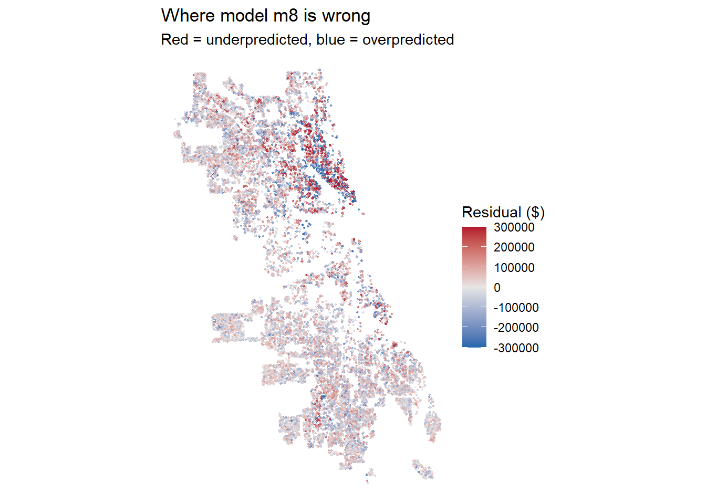
# pct error
train$pred_m8 <- cv_pred(f_m8, train)
train$resid_m8 <- train$sale_price - train$pred_m8
train$pct_err_m8 <- train$resid_m8 / train$pred_m8
ggplot(train) +
geom_sf(aes(color = pct_err_m8), size = 0.4) +
scale_color_gradient2(low = "#2166ac", mid = "grey90", high = "#b2182b",
midpoint = 0, limits = c(-0.5, 0.5),
oob = scales::squish, labels = scales::percent) +
labs(title = "m8 residuals as % of prediction") +
theme_void()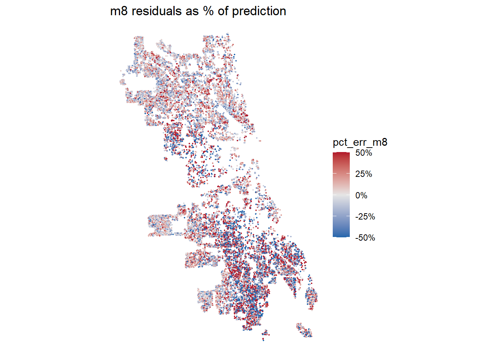
# -----------------------------------------------------------------------
# MODEL 9
# CTA distance
f_m9 <- update(f_m8, . ~ . + log(dist_l_mi))
model_log <- add_entry(f_m9, train, "m9", "log dist to nearest L station",
"transit accessibility")
# good but very minimal impact on RMSE or Moran's I
# MODEL 10: lake distance - Talyah
f_m10 <- update(f_m9, . ~ . + log(dist_lake_mi + 0.1))
model_log <- add_entry(f_m10, train, "m10", "log dist to Lake Michigan",
"m8 residuals concentrated near north of lake")
# -340 RMSE, - 0.003 Moran's I
# MODEL 11: school distance - Maya
f_m11 <- update(f_m9, . ~ . + log(dist_school_mi + 0.05))
model_log <- add_entry(f_m11, train, "m11", "log dist to nearest CPS school",
"amenity that varies within neighborhoods")
# basically 0 effect
# MODEL 12: no-vehicle households - Yuqi
f_m12 <- update(f_m10, . ~ . + pct_no_vehicle)
model_log <- add_entry(f_m12, train, "m12", "% households without a vehicle",
"transit dependence")
# basically 0 effect
# MODEL 10 is best - dist to lake
# check if any vars seem unhelpful -- not signif at 0.05
coefs_m10 <- summary(lm(f_m10, train))$coefficients
coefs_m10[coefs_m10[, "Pr(>|t|)"] > 0.05, ] Estimate
num_bedrooms -912.5271087
central_air 4363.6102216
brick_stone_ext -5230.5034505
warmairfurnace 5391.9021786
year_qtr2023Q4 11041.8817340
pct_vacant 35563.6626656
pop_density -0.1892259
factor(nbhd_group)Andersonville -120133.5217335
factor(nbhd_group)Archer Heights 80932.3822237
factor(nbhd_group)Auburn Gresham 11942.5470854
factor(nbhd_group)Avondale 62308.7737234
factor(nbhd_group)Beverly -56442.3995023
factor(nbhd_group)Burnside -37289.6702807
factor(nbhd_group)Calumet Heights -101848.4406339
factor(nbhd_group)Chinatown -35818.1340519
factor(nbhd_group)Clearing 88458.4526622
factor(nbhd_group)Douglas -27175.4759752
factor(nbhd_group)Edgewater 11434.7584584
factor(nbhd_group)Edison Park -43156.3865575
factor(nbhd_group)Englewood 33489.6433132
factor(nbhd_group)Fuller Park -59811.7594422
factor(nbhd_group)Garfield Park -40003.6415434
factor(nbhd_group)Grand Boulevard -9812.2245841
factor(nbhd_group)Grand Crossing -52691.0439091
factor(nbhd_group)Hegewisch -46629.7298888
factor(nbhd_group)Hermosa 83108.5062839
factor(nbhd_group)Humboldt Park -70810.2527937
factor(nbhd_group)Irving Park 28841.8195656
factor(nbhd_group)Jefferson Park 58956.8267664
factor(nbhd_group)Little Italy, UIC -87626.8121919
factor(nbhd_group)Little Village 70118.2462710
factor(nbhd_group)Logan Square -84264.8748668
factor(nbhd_group)Mckinley Park 7995.6728382
factor(nbhd_group)Morgan Park -67671.2493144
factor(nbhd_group)Mount Greenwood 30094.3192365
factor(nbhd_group)New City -59105.6134450
factor(nbhd_group)North Lawndale 99713.9024176
factor(nbhd_group)North Park 88963.6208992
factor(nbhd_group)Norwood Park 34539.3411875
factor(nbhd_group)O'Hare 107615.4182750
factor(nbhd_group)Portage Park 61471.0317822
factor(nbhd_group)Pullman -67589.2445414
factor(nbhd_group)Riverdale 19405.5080958
factor(nbhd_group)Rogers Park -75605.6951765
factor(nbhd_group)Roseland -25736.8979932
factor(nbhd_group)Sheffield & DePaul 135115.6790588
factor(nbhd_group)South Deering -87102.1660124
factor(nbhd_group)Ukrainian Village -113195.1724813
factor(nbhd_group)Washington Heights -18173.5182320
factor(nbhd_group)West Elsdon 100603.5455549
factor(nbhd_group)West Pullman 1979.6733327
factor(nbhd_group)West Ridge -14417.4351364
factor(nbhd_group)Woodlawn -126168.3488511
building_000sf:factor(nbhd_group)Archer Heights -104851.1551325
building_000sf:factor(nbhd_group)Avondale 7221.1637532
building_000sf:factor(nbhd_group)Bridgeport 980.9652026
building_000sf:factor(nbhd_group)Chinatown 45487.0628812
building_000sf:factor(nbhd_group)Edgewater 25885.0955239
building_000sf:factor(nbhd_group)Edison Park 3724.6682879
building_000sf:factor(nbhd_group)Fuller Park -135017.6196802
building_000sf:factor(nbhd_group)Hermosa -73396.8803232
building_000sf:factor(nbhd_group)Humboldt Park 31206.5923203
building_000sf:factor(nbhd_group)Irving Park -11699.2814524
building_000sf:factor(nbhd_group)Kenwood 32061.9242091
building_000sf:factor(nbhd_group)Little Italy, UIC 35859.4993481
building_000sf:factor(nbhd_group)O'Hare -77664.9915350
building_000sf:factor(nbhd_group)Rogers Park -59420.8524520
building_000sf:factor(nbhd_group)Sauganash,Forest Glen 20912.3412387
building_000sf:factor(nbhd_group)West Ridge -49507.4794870
Std. Error
num_bedrooms 1979.9863305
central_air 3165.8357645
brick_stone_ext 2875.2176040
warmairfurnace 3526.3238670
year_qtr2023Q4 5693.4108778
pct_vacant 27669.6880808
pop_density 0.2405305
factor(nbhd_group)Andersonville 119959.3682985
factor(nbhd_group)Archer Heights 73205.3851533
factor(nbhd_group)Auburn Gresham 42673.8387669
factor(nbhd_group)Avondale 49251.3554336
factor(nbhd_group)Beverly 42809.6954185
factor(nbhd_group)Burnside 82662.9419366
factor(nbhd_group)Calumet Heights 53987.7251413
factor(nbhd_group)Chinatown 146839.6302988
factor(nbhd_group)Clearing 49158.2891806
factor(nbhd_group)Douglas 83263.6985230
factor(nbhd_group)Edgewater 65755.5409569
factor(nbhd_group)Edison Park 48765.6928558
factor(nbhd_group)Englewood 41827.8087724
factor(nbhd_group)Fuller Park 140362.1919913
factor(nbhd_group)Garfield Park 55343.6291804
factor(nbhd_group)Grand Boulevard 63655.1244177
factor(nbhd_group)Grand Crossing 47510.0815212
factor(nbhd_group)Hegewisch 58704.0322287
factor(nbhd_group)Hermosa 63402.8320817
factor(nbhd_group)Humboldt Park 43378.8369503
factor(nbhd_group)Irving Park 42057.9044184
factor(nbhd_group)Jefferson Park 47074.1368489
factor(nbhd_group)Little Italy, UIC 70906.5128662
factor(nbhd_group)Little Village 51823.4420638
factor(nbhd_group)Logan Square 48558.5703203
factor(nbhd_group)Mckinley Park 54452.1650865
factor(nbhd_group)Morgan Park 43011.0568098
factor(nbhd_group)Mount Greenwood 43609.0439417
factor(nbhd_group)New City 47945.9741604
factor(nbhd_group)North Lawndale 67287.2633466
factor(nbhd_group)North Park 56377.7903152
factor(nbhd_group)Norwood Park 39697.2353571
factor(nbhd_group)O'Hare 113525.9901053
factor(nbhd_group)Portage Park 41592.1320638
factor(nbhd_group)Pullman 68856.7822111
factor(nbhd_group)Riverdale 82903.4674127
factor(nbhd_group)Rogers Park 61479.8999927
factor(nbhd_group)Roseland 41150.9052170
factor(nbhd_group)Sheffield & DePaul 86334.4507019
factor(nbhd_group)South Deering 63996.7304072
factor(nbhd_group)Ukrainian Village 111642.7875441
factor(nbhd_group)Washington Heights 44617.5545081
factor(nbhd_group)West Elsdon 62093.8575131
factor(nbhd_group)West Pullman 43694.9001291
factor(nbhd_group)West Ridge 44200.2815779
factor(nbhd_group)Woodlawn 70431.4300598
building_000sf:factor(nbhd_group)Archer Heights 56732.0970257
building_000sf:factor(nbhd_group)Avondale 29619.6107987
building_000sf:factor(nbhd_group)Bridgeport 26991.4171600
building_000sf:factor(nbhd_group)Chinatown 88909.4924407
building_000sf:factor(nbhd_group)Edgewater 35191.4562596
building_000sf:factor(nbhd_group)Edison Park 29438.2737812
building_000sf:factor(nbhd_group)Fuller Park 113358.6866282
building_000sf:factor(nbhd_group)Hermosa 44898.2378634
building_000sf:factor(nbhd_group)Humboldt Park 27303.2588739
building_000sf:factor(nbhd_group)Irving Park 24802.3447006
building_000sf:factor(nbhd_group)Kenwood 28063.5867742
building_000sf:factor(nbhd_group)Little Italy, UIC 38511.4504346
building_000sf:factor(nbhd_group)O'Hare 75870.3674128
building_000sf:factor(nbhd_group)Rogers Park 32842.7956858
building_000sf:factor(nbhd_group)Sauganash,Forest Glen 25520.0451218
building_000sf:factor(nbhd_group)West Ridge 25714.4534842
t value Pr(>|t|)
num_bedrooms -0.46087546 0.64489233
central_air 1.37834384 0.16811059
brick_stone_ext -1.81916786 0.06889885
warmairfurnace 1.52904338 0.12626747
year_qtr2023Q4 1.93941417 0.05246317
pct_vacant 1.28529323 0.19870281
pop_density -0.78670240 0.43146422
factor(nbhd_group)Andersonville -1.00145177 0.31661901
factor(nbhd_group)Archer Heights 1.10555230 0.26893193
factor(nbhd_group)Auburn Gresham 0.27985640 0.77959020
factor(nbhd_group)Avondale 1.26511795 0.20584190
factor(nbhd_group)Beverly -1.31844899 0.18736655
factor(nbhd_group)Burnside -0.45110505 0.65191810
factor(nbhd_group)Calumet Heights -1.88651106 0.05923873
factor(nbhd_group)Chinatown -0.24392689 0.80728962
factor(nbhd_group)Clearing 1.79946158 0.07195883
factor(nbhd_group)Douglas -0.32637844 0.74414102
factor(nbhd_group)Edgewater 0.17389802 0.86194714
factor(nbhd_group)Edison Park -0.88497433 0.37617975
factor(nbhd_group)Englewood 0.80065498 0.42333970
factor(nbhd_group)Fuller Park -0.42612443 0.67002117
factor(nbhd_group)Garfield Park -0.72282288 0.46979607
factor(nbhd_group)Grand Boulevard -0.15414666 0.87749546
factor(nbhd_group)Grand Crossing -1.10904975 0.26742034
factor(nbhd_group)Hegewisch -0.79431903 0.42701794
factor(nbhd_group)Hermosa 1.31080117 0.18993806
factor(nbhd_group)Humboldt Park -1.63236863 0.10261557
factor(nbhd_group)Irving Park 0.68576454 0.49286853
factor(nbhd_group)Jefferson Park 1.25242502 0.21042780
factor(nbhd_group)Little Italy, UIC -1.23580767 0.21654271
factor(nbhd_group)Little Village 1.35302179 0.17606200
factor(nbhd_group)Logan Square -1.73532446 0.08269678
factor(nbhd_group)Mckinley Park 0.14683847 0.88326081
factor(nbhd_group)Morgan Park -1.57334542 0.11565264
factor(nbhd_group)Mount Greenwood 0.69009353 0.49014235
factor(nbhd_group)New City -1.23275446 0.21768001
factor(nbhd_group)North Lawndale 1.48191348 0.13837705
factor(nbhd_group)North Park 1.57799056 0.11458156
factor(nbhd_group)Norwood Park 0.87006918 0.38427170
factor(nbhd_group)O'Hare 0.94793640 0.34317181
factor(nbhd_group)Portage Park 1.47794856 0.13943527
factor(nbhd_group)Pullman -0.98159168 0.32631140
factor(nbhd_group)Riverdale 0.23407354 0.81492998
factor(nbhd_group)Rogers Park -1.22976282 0.21879854
factor(nbhd_group)Roseland -0.62542726 0.53169689
factor(nbhd_group)Sheffield & DePaul 1.56502622 0.11759055
factor(nbhd_group)South Deering -1.36104088 0.17351414
factor(nbhd_group)Ukrainian Village -1.01390493 0.31063881
factor(nbhd_group)Washington Heights -0.40731767 0.68377849
factor(nbhd_group)West Elsdon 1.62018515 0.10520625
factor(nbhd_group)West Pullman 0.04530674 0.96386321
factor(nbhd_group)West Ridge -0.32618424 0.74428794
factor(nbhd_group)Woodlawn -1.79136429 0.07324803
building_000sf:factor(nbhd_group)Archer Heights -1.84818049 0.06458909
building_000sf:factor(nbhd_group)Avondale 0.24379671 0.80739045
building_000sf:factor(nbhd_group)Bridgeport 0.03634360 0.97100870
building_000sf:factor(nbhd_group)Chinatown 0.51161087 0.60892830
building_000sf:factor(nbhd_group)Edgewater 0.73555056 0.46201177
building_000sf:factor(nbhd_group)Edison Park 0.12652468 0.89931772
building_000sf:factor(nbhd_group)Fuller Park -1.19106549 0.23364019
building_000sf:factor(nbhd_group)Hermosa -1.63473855 0.10211758
building_000sf:factor(nbhd_group)Humboldt Park 1.14296218 0.25306622
building_000sf:factor(nbhd_group)Irving Park -0.47170062 0.63714498
building_000sf:factor(nbhd_group)Kenwood 1.14247421 0.25326888
building_000sf:factor(nbhd_group)Little Italy, UIC 0.93113863 0.35179165
building_000sf:factor(nbhd_group)O'Hare -1.02365382 0.30600960
building_000sf:factor(nbhd_group)Rogers Park -1.80925074 0.07042514
building_000sf:factor(nbhd_group)Sauganash,Forest Glen 0.81944766 0.41253956
building_000sf:factor(nbhd_group)West Ridge -1.92527831 0.05420689# Pr(>|t|)
# num_bedrooms 0.64489233
# central_air 0.16811059
# brick_stone_ext 0.06889885
# warmairfurnace 0.12626747
# year_qtr2023Q4 0.05246317
# pct_vacant 0.19870281
# pop_density 0.43146422
# MODEL 12: Try dropping predictors
# ignore pct_poverty since 0.06 is right on edge of signif
# ignor year_qtr2023Q4 since it's one level of a factor
f_m13 <- update(f_m10, . ~ . - num_bedrooms - central_air -
brick_stone_ext - warmairfurnace -
pct_vacant - pop_density)
model_log <- add_entry(f_m13, train, "m13", "dropped 6 predictors from m10",
"insignificant in lin reg, might not be helping preds")# -----------------------------------------------------------------------
# MODEL 14
# Violent crime, 5 NN mean distance
f_m14 <- update(f_m13, . ~ . + log(violent_knn5))
model_log <- add_entry(f_m14, train, "m14",
"log mean dist to 5 nearest homicides/robberies",
"house/block disamenities, more granular")
# MODEL 15
# Count of vacant building complaints within 660 feet
f_m15 <- update(f_m14, . ~ . + log(vacant_660ft + 1))
model_log <- add_entry(f_m15, train, "m15",
"log(1 + vacant building complaints within 660 ft)",
"house/block disamenities, more granular")
# doesn't really add anything meaningful to RMSE on top of crimes knn
# but does decrease Moran's I a bitShow your final model, the model log, and baseline vs. final residual maps.
f_final <- f_m15
model_log# A tibble: 15 × 5
model added cv_rmse moran_i notes
<chr> <chr> <dbl> <dbl> <chr>
1 m1 baseline model 291320. 0.398 sale…
2 m2 sqft^2, age^2, log(lot size) 275125. 0.411 basi…
3 m3 year_qtr 274142. 0.413 sale…
4 m4 sqft_lot_ratio, new and old (house age flags) 273615. 0.414 rich…
5 m5 ACS vars: income, owner occ, college, poverty, v… 226230. 0.352 neig…
6 m6 Neighborhood FE 201403. 0.215 Capt…
7 m7 Distance from center city 201221. 0.214 Will…
8 m8 interaction term: sqft x neighborhood 181489. 0.171 Pric…
9 m9 log dist to nearest L station 181439. 0.170 tran…
10 m10 log dist to Lake Michigan 181100. 0.167 m8 r…
11 m11 log dist to nearest CPS school 181432. 0.170 amen…
12 m12 % households without a vehicle 181105. 0.167 tran…
13 m13 dropped 6 predictors from m10 181046. 0.168 insi…
14 m14 log mean dist to 5 nearest homicides/robberies 180948. 0.167 hous…
15 m15 log(1 + vacant building complaints within 660 ft) 180925. 0.167 hous…plot_resid(formula = f_baseline, model = "m1")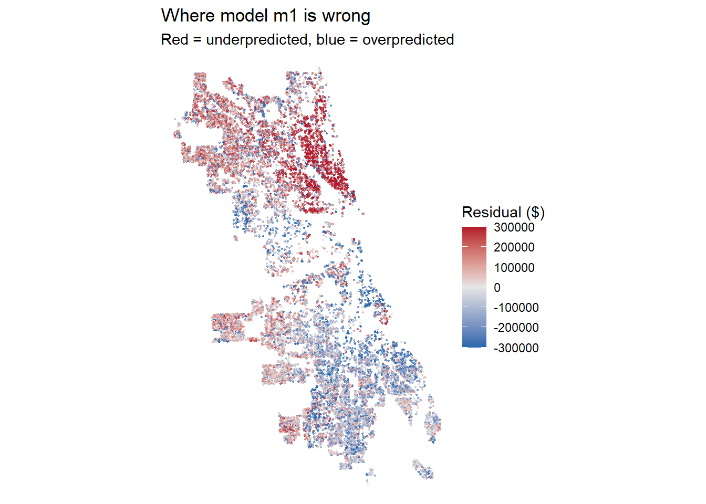
plot_resid(formula = f_final, model = "final_model")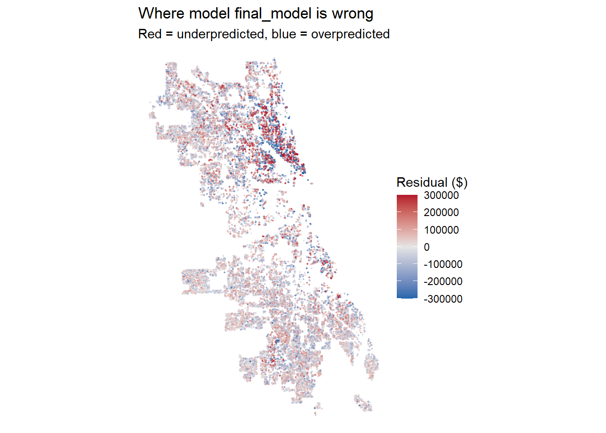
train$pred_final <- cv_pred(f_final, train)
train$resid_final <- train$sale_price - train$pred_final
train$pct_err_final <- train$resid_final / train$pred_final
ggplot(train) +
geom_sf(aes(color = pct_err_final), size = 0.4) +
scale_color_gradient2(low = "#2166ac", mid = "grey90", high = "#b2182b",
midpoint = 0, limits = c(-0.5, 0.5),
oob = scales::squish, labels = scales::percent) +
labs(title = "final residuals as % of prediction") +
theme_void()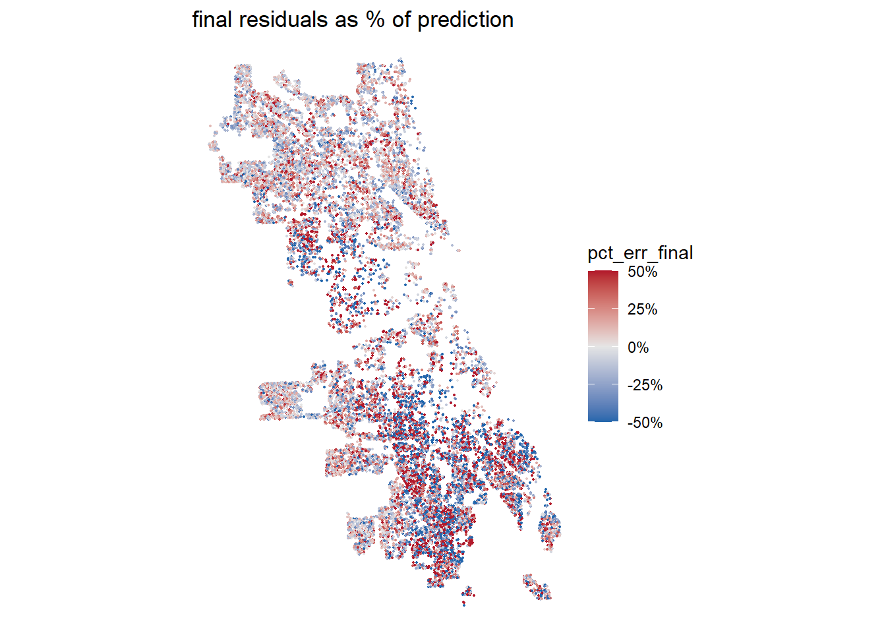
What helped most, and what disappointed you? Use your log.
The most helpful improvements came from ACS socioeconomic variables, neighborhood fixed effects, and interaction between building size and neighborhood.
Adding ACS variables reduced RMSE by $47,385, neighborhood fixed effects reduced it by $24,827 and lowered Moran’s I from 0.3523 to 0.2149. The interaction between building area and neighborhood also made a big difference by reducing RMSE by $19,732.
Some features were less helpful than expected. Nearest CTA stations only improved RMSE by $50, and the distance to nearest school and the percentage of households without vehicles had almost no effect. Distance to Lake Michigan slightly improved RMSE and Moran’s I.
Our residual maps show a clear improvement from the baseline to the final model. The baseline has noticeable spatial clustering of under-predictions in parts of northern Chicago and over-predictions in southern Chicago. These patterns show less in the final model.
Overall, our final model M15 achieved the lowest CV RMSE of $180,925, compared to the $291,320 from baseline. It shows a 37.9% reduction and Moran’s I also decreased from 0.3983 to 0.1667.
Where does your final model fail worst? Is it guessing too high or too low there, and why do you think so?
Based on the plots above, the model fails the most in the southern part of Chicago, specifically Roseland and South Shore. There are not uniform patterns of guessing too high or too low, rather there is a mix of patterns of overprediction and underprediction. This could be attributed to the fact that there are variables that move in conflicting directions within this region. For example, while the southern part of Chicago may have lower income rates and higher vacancy rates compared to the rest of the city, it is also closer to the lake, the loop, schools, and may have higher amounts of college-educated individuals due to proximity to universities. Thus, because of these conflicting indicators of home price coexisting in one area it may lead to more extreme over- or under-predictions that cannot be uniformly accounted for.
Assessors judge their work with the ratio of predicted value to sale price. A ratio above 1 means the home is over-valued and its owner over-taxed. Does your model’s ratio differ by neighborhood income? Connect your answer to your Part 1 cleaning rules and to “The Tax Divide.”
Based on the ratio of predicted values to sale prices, it seems that homes in the south part of Chicago are over-valued and their owners are over-taxed in comparison to other areas, possibly in part due to the reasons described above. In the initial cleaning stages of our model creation we removed homes that were above the 99.9th percentile in sales price and homes that were below the 0.1th percentile in sales price. This translates to homes that are relatively higher in sales price being under-predicted and homes that are relatively lower in sales prices being over-predicted due to the constrained range of training data. Furthermore, this connects to “The Tax Divide” which exposed how many lower-income households’ homes in Chicago were over-assessed relative to commercial and high-end residential properties. Comparing the two maps that show the ratio of predicted values to sale prices and median income, the model mirrors the same systematic biases present in Cook County’s property tax assessments in which housing in lower-income areas is over-predicted.
train$Ratio <- train$pred_final/train$sale_price
ggplot(train) +
geom_sf(aes(color = Ratio), size = 0.4) +
scale_color_gradient2(low = "darkblue",
mid = "grey90",
high = "#b2182b",
midpoint = 0,
limits = c(-1, 2),
oob = scales::squish) +
labs(title = "Ratio of predicted sales price to actual sales price") +
theme_void()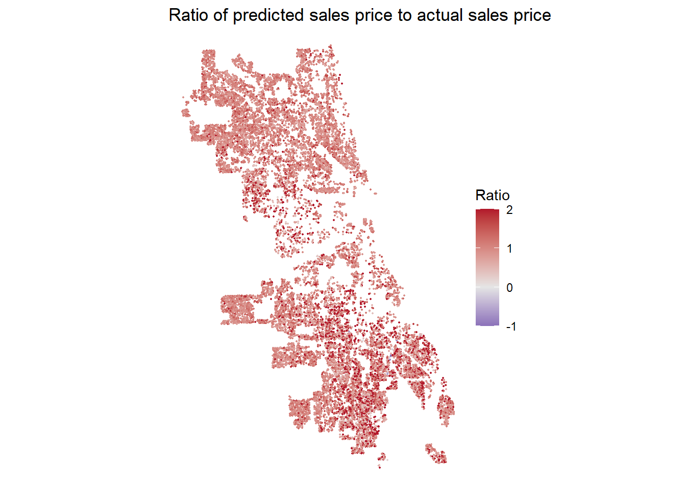
ggplot(train) +
geom_sf(aes(color = med_incomeE), size = 0.4) +
scale_color_gradient2(mid = "red",
high = "grey",
limits = c(0, 100000),
oob = scales::squish) +
labs(title = "Median household income") +
theme_void()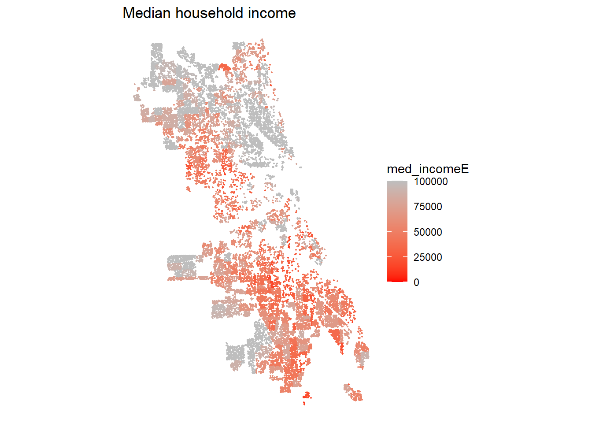
Refit your final recipe on all training sales, then predict every test house. Set f_final to your final formula.
m_final <- lm(f_final, data = st_drop_geometry(train))
all_sales <- sales
test <- all_sales %>% filter(split == "test")
#check_na(f_final, st_drop_geometry(test)) # fill NAs; never drop test rows
preds <- tibble(id = test$id, pred = predict(m_final, st_drop_geometry(test)))
stopifnot(nrow(preds) == nrow(test), all(is.finite(preds$pred)))
write_csv(preds, "team_7_predictions.csv") # replace XX with your team numberFinal CV RMSE: 180,925.1. When your test RMSE comes back, you’ll explain the gap on Q7.
Read one coefficient twice: once as β̂, once for what it does to ŷ.
Looking at the coefficient building_000sf β̂ represents the estimated change in sale price associated with a one-unit increase in building size. This is of course assuming that other predictors are held constant. Since building_000sf measures size in thousands of square feet, one unit represents an additional 1,000 square feet. Ŷ is the predicted sale price and so increasing building size by 1,000 square feet changes the prediction according to the coefficient. Since the final model includes a squared building-size term as well as an interaction between square footage and neighborhood, the actual effect β̂ has on ŷ, depends on the properties size and neighborhood.
Would you hand this model to the Assessor? What would you warn them about?
We would not hand this model to the Assessor currently, with the high level of uncertainty in its prediction. The characteristics and variables added to our model helped predict sales price as much as possible while using open data. However, it’s crucial to recognize the major limitations inherent in our model. This model is trained on properties sold between 2023 and 2025, which does not represent all properties. Since we used median inputs for some missing property characteristics there is a chance these characteristics are skewed from the reality of the situation. We applied specific criteria to remove outliers. Therefore, the model is not trained on the complete dataset and therefore might be less accurate in predicting extremely high and low priced houses. It’s also important to note that just because a low RMSE score is achievable does not mean that prediction errors across neighborhoods and income groups don’t exist. The model and data used to feed the model could systematically under or overvalue homes in particular neighborhoods. Most importantly, our final model m15’s CV RMSE of $180,925 indicates a substantial prediction error. An error of this size could result in homeowners paying much more or less in taxes than they should. This level of uncertainty is still extraordinarily significant to be used as a prediction model. The final model would need to be significantly altered to even be considered being sent over to an Assessor.
Katie → Created the base model used for testing the variables. Tested all the variables in one script, created the final model, and answered the question “Decide which training sales are market sales. Record each rule, why, and how many it removed.” Established the data cleaning rules and wrote the script for imputing a median.
Yuqi → Filled out the answers for Part 3 “What helped most, and what disappointed you?” Created the variables distance to the L station.
Maya → Filled out the answers for “What in your exploration shaped your modeling choices?” and filled in for part 6 “Reflection.” Created the variables distance to school 2023-2024 and Dist to L station.
Talyah → Put together and edited the complete final document including everyone’s answers to the questions. Filled out the answers to part 4 “Where it fails, and who pays?” Created the variables distance to Lake Michigan and neighborhood fixed effects.
What was your team’s AI policy and how was AI used in this assignment?
We used AI to merge scripts/ideas from everyone or for debugging purposes, otherwise the base script were written individually by each member.